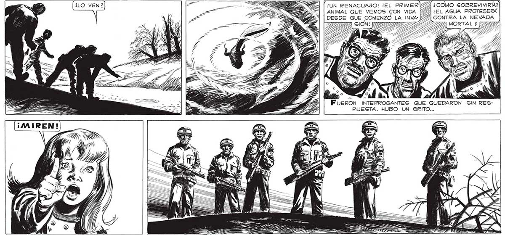
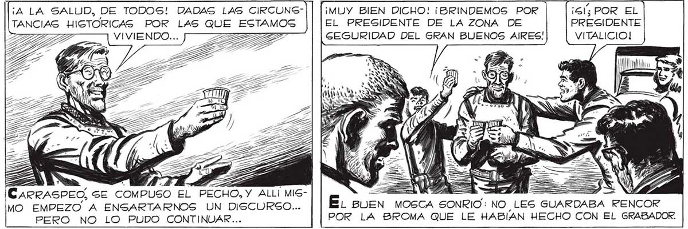

¡A LA SALUD, DE TODOS! DADAS LAS CIRCUNGTANCIA Ú ¡CARRASPEO, SE COMPUSO EL PECHO, Y ALLÍ MISMO EMPEZO A ENSARTARNOS UN DISCURSO... PERO NO LO PUDO CONTINUAR... ¡MUY BIEN DICHO! ¡BRINDEMOS POR EL PRESIDENTE DE LA ZONA DE GEGURIDAD DEL GRAN BUENOS AIRES! ¡Gl POR EL PRESIDENTE VITALICIO! 339 ACEPTO ENCANTADO EL HOMENAJE, PERO... ¡ALLI EN EL AGUA! =— a E E. BUEN MOSCA SONRIO: NO LES GUARDABA RENCOR POR LA BROMA QUE LE HABIAN HECHO CON EL GRABADOR. ¡UN RENACUAJO! ¡EL PRIMERISÍ ¿COMO SOBREVIVIRIA? | ANIMAL QUE VEMOS CON VIDA [27 ¿EL AGUA PROTEGERA DESDE QUE COMENZÓ LA INVA: [22] CONTRA LA NEVADA > ASS FUERON INTERROGANTES QUE QUEDARON GIN RESPUEGTA. HUBO UN GRITO... == Y GI / A y = EN ==: mv,

